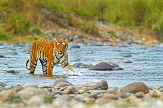

Jim Corbett National Park
Located in Uttarakhand, Jim Corbett is the oldest national park in India. It is known for its Bengal tigers and rich biodiversity.
Kaziranga National Park
Situated in Assam, Kaziranga is famous for its population of the Indian one-horned rhinoceros. It is a UNESCO World Heritage Site.
Ranthambore National Park
Located in Rajasthan, Ranthambore is known for its tiger reserves and historic Ranthambore Fort. It’s a popular wildlife tourism destination.
Sundarbans National Park

In West Bengal, the Sundarbans are renowned for their mangrove forests and the Bengal tiger. It is also a UNESCO World Heritage Site.
Periyar National Park

Located in Kerala, Periyar is known for its picturesque lake and elephants. The park is a haven for wildlife enthusiasts and offers boat safaris.
Bandhavgarh National Park
Situated in Madhya Pradesh, Bandhavgarh is famous for its high density of Bengal tigers and diverse flora and fauna.
Gir National Park
In Gujarat, Gir is the only place in India where Asiatic lions are found in the wild. It is a key conservation site for these majestic animals.
Kanha National Park
Located in Madhya Pradesh, Kanha is known for its picturesque landscape and rich wildlife, including the Bengal tiger and the Barasingha deer.
Nanda Devi National Park
Situated in Uttarakhand, Nanda Devi is a UNESCO World Heritage Site known for its stunning mountain scenery and diverse wildlife.
Kalakkad Mundanthurai Tiger Reserve
Located in Tamil Nadu, Kalakad Mundanthurai Tiger Reserve is known for its rich biodiversity and is a critical habitat for tigers, elephants, and various bird species.